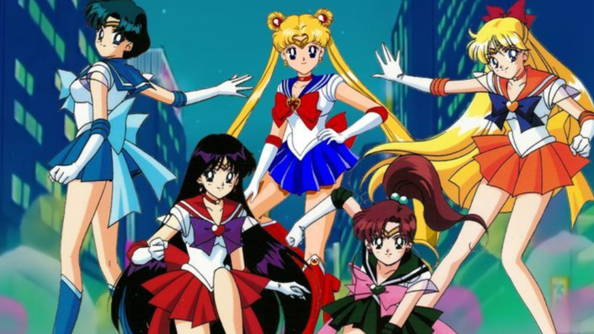

Conoce a las guerreras de la justicia
★Conoce a los personajes principales
Aquí podrás conocer a los personajes principales de Sailor Moon, descubrea a todos y no te pierdas ninguna de sus aventuras.
Personajes★Guía de la serie en orden cronológico
La primera temporada del anime fue emitida en 1992, Toei Animation continua adaptando el manga creado por Naoko Takeuchi. A continuación te dejamos una guía.
Guia cronológica★Conoce su historia
Sailor Moon es uno de los animes más representativos de la historia, marcando toda una época dentro del género y cautivando a miles de espectadores.
WikifandomGaleria

Temporadas
Opening
Sailor Moon – Temporada 1
Se trata de la temporada emitida entre 1992 y 1993, y la cual nos introduce al mundo de las Sailor Scouts. Serena descubre que es la guardiana de la Tierra y junto a sus compañeros se enfrenta a los temibles enemigos del Reino Oscuro que desean acabar con el planeta.Se trata de la temporada emitida entre 1992 y 1993,temporada emitida entre 1992 y 1993,temporada emitida
Sailor Moon R
Sailor Moon R es un producto exclusivo del anime que no tiene su equivalente en el manga. La serie fue conceptualizada como relleno mientras el manga se ponía al día con la segunda temporada, y narra la aventura de una chica de cabello rosado parecida a Sailor Moon, quien busca el Cristal de Plata al tiempo que enfrenta al llamado Clan de la Luna Negra.
Sailor Moon S
Sailor Moon S fue transmitida entre 1994 y 1995 y es considerada hasta la fecha la temporada más polémica de la saga debido a los temas que abordó dentro del desarrollo de la historia, como la muerte, la distopía y las relaciones homosexuales. Es uno de los arcos favoritos de los fanáticos y vemos como las Sailor Scouts enfrentan a los Death Busters .
Sailor Moon SuperS
La cuarta temporada de la serie Sailor Moon regresó a las raíces inocentes con la llegada de Chibiusa como una de las protagonistas de la serie. Las Sailor Scouts principales están de vacaciones mientras la hija de Serena se la pasa soñando con un unicornio volador, al tiempo que un enemigo llamado Dead Moon se infiltra en la ciudad durante un eclipse solar.
Sailor Moon Sailor Stars
Sailor Moon R es un producto exclusivo del anime que no tiene su equivalente en el manga. La serie fue conceptualizada como relleno mientras el manga se ponía al día con la segunda temporada, y narra la aventura de una chica de cabello rosado parecida a Sailor Moon, quien busca el Cristal de Plata al tiempo que enfrenta al llamado Clan de la Luna Negra.
Sailor Moon Crystal
Una nueva adaptación animada de Sailor Moon llegó en 2014. En lugar de hacer una versión moderna del anime, Crystal apostó por realizar una adaptación más fiel del manga original, dondeasta ahora ha cubierto los primeros tres arcos: Dark Kingdom, Black Moon e Infinity.a de Sailor Moon llegó en 2014. En lugar de .
Sailor Moon Eternal
Toei Animation se encuentra adaptando el cuarto arco del manga en dos largometrajes llamados de forma colectiva Sailor Moon Eternal. Aquí, las Sailor Scouts se enfrentarán a Dead Moon, sin embargo, debido a que está inspirado en el manga original, el desarrollo de la historia será muy diferente de lo que se vio durante SuperS.
Personajes
Guerrero Luna
Ella es Usagi Tsukino y mantiene unido al grupo de las Sailors Scout como su compañera y líder, además de que estudia junto con Sailor Mercury y Jupiter. Tiene 14 años, es una niña llorona que va en segundo año de Secundaria; le gusta comer todo tipo de postres, leer mangas y pasarse horas frente a los videojuegos. Le gusta coleccionar cosas de conejos, le disgustan las matemáticas, el inglés y los exámenes sorpresa.
Más información en la wiki >Guerrero Marte
Rei tiene mal carácter, es tenaz, un poco mandona pero bien intencionada, quien aspira a ser una "idol". Sailor Mars es muy leal hacia Sailor Moon es muy fuerte, y su determinación y sentido de la justicia son admirables.
Más información en la wiki >Guerrero Venus
Su personalidad es bastante similar a la de Usagi en un principio, con la ligera diferencia de que ella no se echa para atrás al momento de defender sus convicciones y creencias. Como Sailor Venus, Minako muestra una faceta bastante seria al contrario de su imagen irresponsable y vaga que muestra en su faceta civil.
Más información en la wiki >Guerrero Júpiter
A pesar de su apariencia ruda y varonil, Makoto disfruta de pasatiempos domésticos como cocinar, jardinería, arreglos florales, y la artesanía. Pero ella practica Karate, en el cual es cinta negra. Su sueño es ser propietaria de una tienda de dulces, una panadería, una florería, o una combinación de ellas. Ella posee una fuerza sobrehumana, es capaz incluso de pelear contra hombres fuertes, como en su debut venció a unos vándalos que huyeron y pudo pelear contra Zoycite sin siquiera transformarse en Sailor Jupiter.
Más información en la wiki >Guerrero Mercurio
Ami es una chica tímida a la que le cuesta hacer amigos y es muy bella; no obstante, ella prefiere estar sola con sus libros. Estudia mucho y a diario, siendo así que sacó la nota mas alta en los exámenes nacionales, lo que llevó a sus compañeros de clase a especular que era sobrehumana y tenía un CI de 300. Matemáticas y la ciencia són sus temas favoritos, y esta destinada a convertirse en doctora como su madre.
Más información en la wiki >Chibiusa
Chibiusa viaja al siglo XX inicialmente para buscar ayuda cuando el mundo del futuro en el que ella vive es atacado por un grupo de enemigos llamados Black Moon. uele ser engreída y tiene a realizar acciones indebidas con el fin de obtener lo que desea, así como llega incluso a manipular a Mamoru. Siempre trata de mostrar un lado maduro, aunque a veces termina dándose cuenta de que no podría hacerlo completamente
Más información en la wiki >Luna y Artemis
Luna es una gata de apariencia normal a simple vista, tiene un pelaje color violeta oscuro y tiene en la frente una marca en forma de Luna creciente de color amarillo. Es de carácter tranquilo y calculador, se enfada con frecuencia cuando Usagi no quiere hacer los deberes, por lo cual la regaña frecuentemente.
Artemis es un gato blanco, con grandes ojos azules y con una luna amarilla en la frente al igual que Luna. Suele ser algo torpe y despistado, lo que lleva a ser molestado por Luna y las chicas, pero siempre busca el modo de cumplir con su misión y averiguar datos sobre los enemigos, aunque frecuentemente fracasa en ello, causando la burla de las demás.
Más información en la wiki >Señor del Antifaz
Tuxedo Mask es muy maduro y siempre llega a tiempo para salvar a Sailor Moon u otra Sailor cuando esta a punto de ser derrotada, lanzando su típica rosa roja a la maligna o lo que sea que ponga en problemas a las Sailor Senshi. Siempre le da palabras de aliento a Sailor Moon para evitar que se rinda y venza el combate. Su personalidad es levemente diferente a la de Mamoru.
Más información en la wiki >Redes sociales